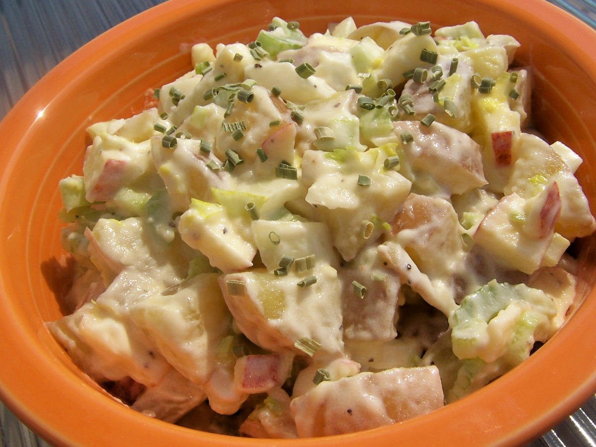

PotatoSalad

The best potato salad recipe can be cooked by follwing these steps:
Incredients
- 1 tablespoon vegetable oil
- 1 onion, chopped
- 3 cloves garlic, chopped
- 1 ¼ pounds ground turkey
- 1 (28 ounce) can enchilada sauce
- 1 onion, chopped
- 3 cloves garlic, chopped
- 1 ¼ pounds ground turkey
- 1 tablespoon vegetable oil
- 1 onion, chopped
- 3 cloves garlic, chopped
- 1 ¼ pounds ground turkey
- 1 tablespoon vegetable oil
- 1 onion, chopped
- 3 cloves garlic, chopped
- 1 ¼ pounds ground turkey
Cooking steps:
- Step 1
- Step 2
- Step 3
- Step 4
- Step 5
- Step 6 etc